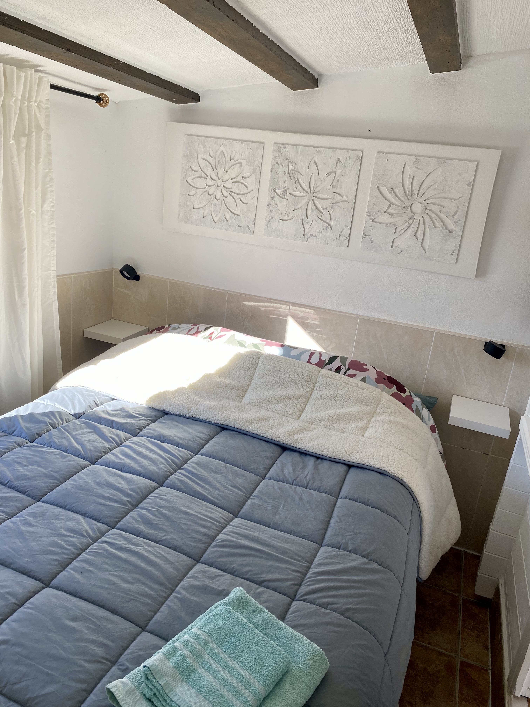

Calma
Un entorno sereno para desconectar de la rutina y disfrutar del tiempo.
Descanso, naturaleza y calma en Fortuna
Casita tranquila en una zona serena cerca de Fortuna, ideal para desconectar en un entorno natural.
Alojamiento en Fortuna
El Rincón del Paraíso ofrece una experiencia serena en plena naturaleza, diseñada para quienes buscan tranquilidad, confort y una base ideal para descubrir la región de Murcia.
La casita

Experiencia
Un entorno sereno para desconectar de la rutina y disfrutar del tiempo.
Paisajes rurales, luz natural y un ambiente relajante en cada momento.
Tiempo de bienestar con piscina compartida y jacuzzi privado para disfrutar al máximo.
Pérgola, sol, tranquilidad y momentos al aire libre para relajarse.
Excelente base para explorar la zona y disfrutar de la región de Murcia.
Una ubicación ideal para explorar caminos, pueblos y rincones de la comarca.
Galería
Fortuna
Fortuna combina tranquilidad, ambiente local y facilidad para explorar rincones de la costa y del interior.
Reserva
Puedes reservar directamente en Airbnb o contactar por WhatsApp para confirmar disponibilidad y fechas.
Contacto